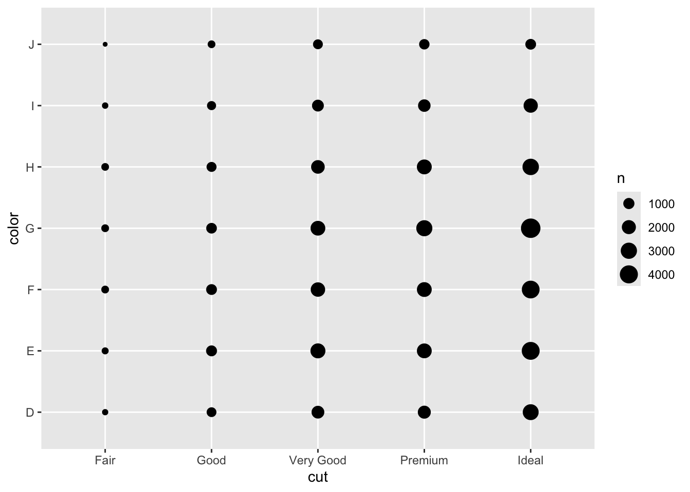
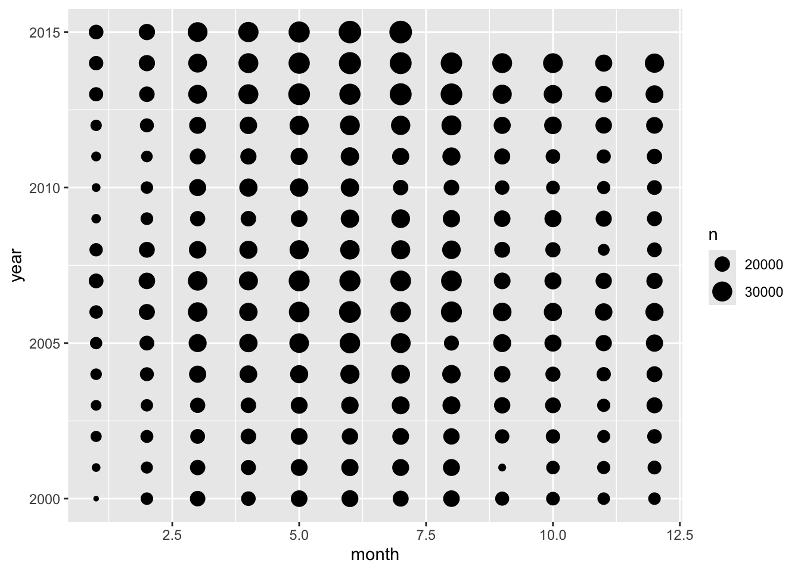
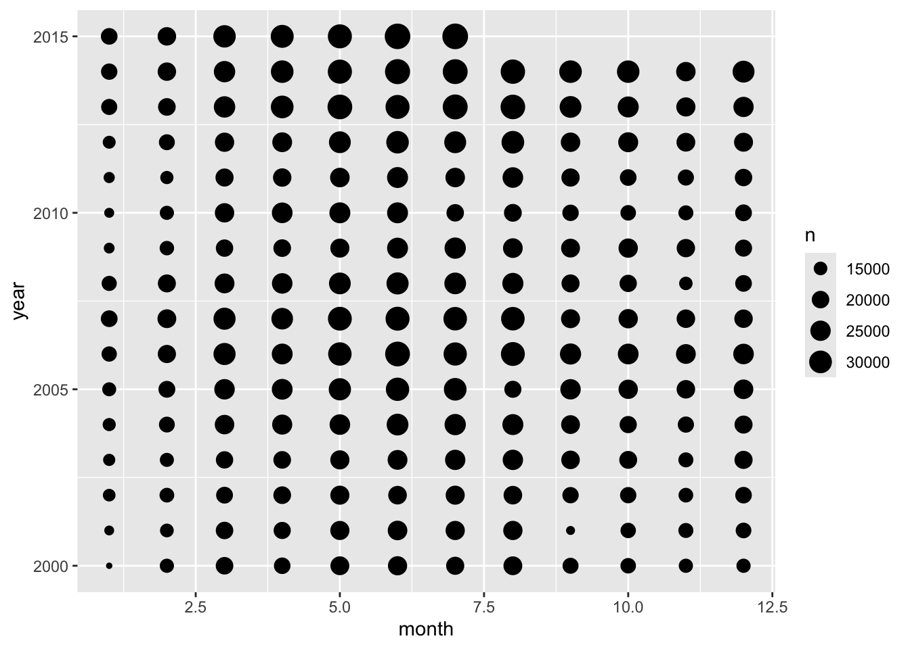
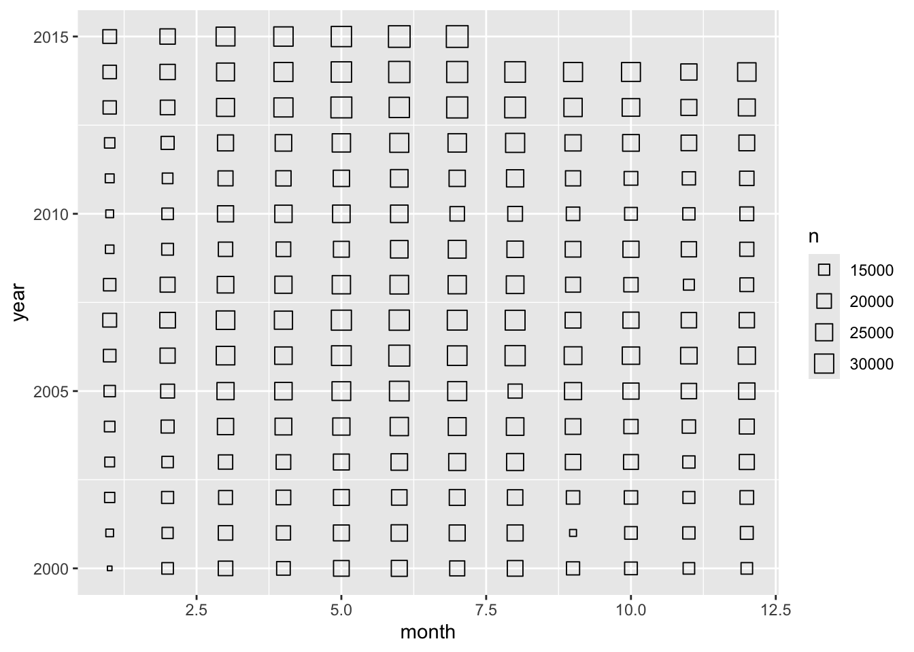
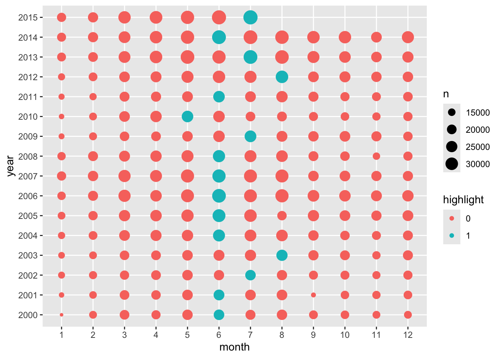
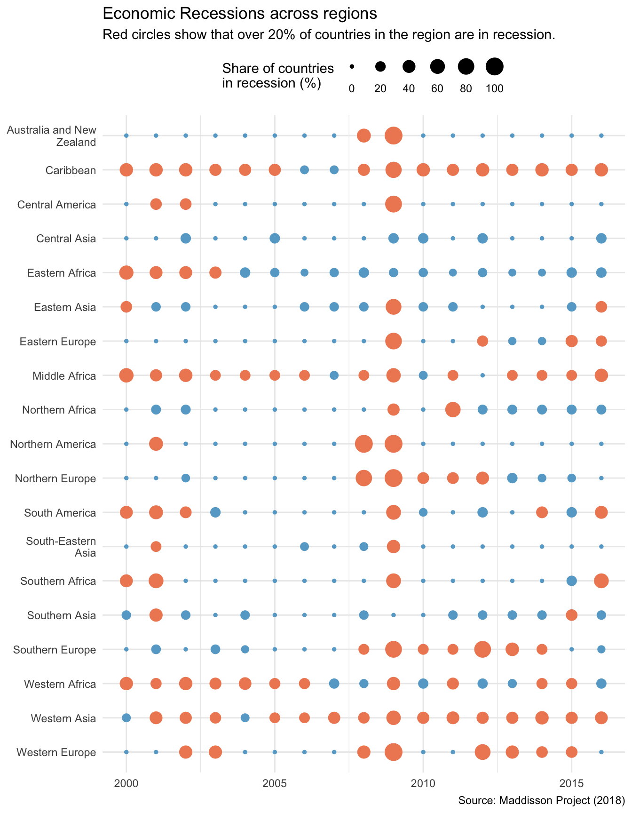
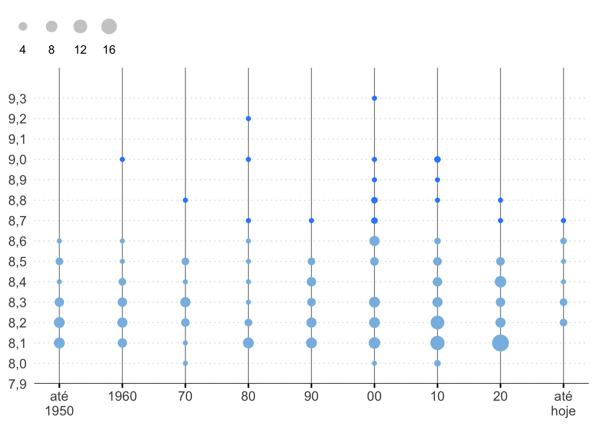

library(ggplot2)
library(dplyr)Punchcard plot
A “punchcard” plot shows the occurrence/frequency of a pair of discrete variables. Each discrete variable is plotted onto the X-Y axis and the intensity of the frequency is represented by the size or color of point. The use of colors can also help visualize a third discrete variable.
There are several possible applications of a “punchcard” plot. They might include:
the number of visitors received by a chain of stores in each state (x) and each day of the week (y);
the aggregated rating of products (y) based on their category (x)
the number of students attending each class (x) based on their major (y); and many other examples.
I haven’t found much formal documentation on “punchcard plots” and have myself only found out about this term while looking for a name for the plot below. This visualization shows the IMDB ratings for the top 250 films by decade. The size of each bubble shows how many films appear in each rating bin in each decade.

There are some other posts discussing this type of plot (here, and here) but overall this is definitely not a well-established term.
ggplot2
The basics
The simplest way to make a punchcard plot is to use the geom_count function. This will count the ocurrences of the x-y pair variables selected. The example below uses the diamonds data.
ggplot(diamonds, aes(cut, color)) +
geom_count()
This function is a simple wrapper around geom_point(aes(size = n)). The code below makes the same plot, but first we count the number of occurrences of each of the cut and color variables.
It’s important to note that there’s nothing special about n. It’s simply the default column name that results from using the count function.
tab <- diamonds |>
count(cut, color)
ggplot(tab, aes(cut, color)) +
geom_point(aes(size = n))
If our data is already aggregated we might desire to show the sum of some pair of variables. In the txhousing data we have the total number of house sales in each month and year by city. To aggregate the total number of sales, across all cities, we can use weight = sales.
Note that both year and month are continuous variables but we can treat them as if they were discrete. To actually force R to treat them as categorical variables they must be converted to factor. Also note the use na.omit since there are missing values in the sales column.
txhousing <- na.omit(txhousing)
ggplot(txhousing, aes(month, year)) +
geom_count(aes(weight = sales))
Again, the same result can be achieved using count and geom_point but more code is necessary.
txhousing |>
na.omit() |>
count(year, month, wt = sales) |>
ggplot(aes(month, year)) +
geom_point(aes(size = n))Modifying the plot
There isn’t much customization available for punchcard plots. To change the size of each bubble we use scale_size_*.
ggplot(txhousing, aes(month, year)) +
geom_count(aes(weight = sales)) +
scale_size_continuous(breaks = c(15000, 20000, 25000, 30000))
Since geom_count is essentially the same as geom_point we can alter its shape.
ggplot(txhousing, aes(month, year)) +
geom_count(aes(weight = sales), shape = 22) +
scale_size_continuous(breaks = c(15000, 20000, 25000, 30000))
Finally, we can use geom_color_* and geom_fill_ to map variables as a color on the plot. In the plot below I highlight the top-selling month in each year. It becomes clear the June and July are the most active months for the housing market.
agghousing <- txhousing |>
count(month, year, wt = sales) |>
mutate(
year = as.factor(year),
month = as.factor(month),
highlight = factor(if_else(n == max(n), 1L, 0L)),
.by = "year"
)
ggplot(agghousing, aes(month, year)) +
geom_point(aes(size = n, color = highlight)) +
scale_size_continuous(breaks = c(15000, 20000, 25000, 30000))
Countries in recession
For a more interesting example we can calculate the share of countries facing an economic recession by region. We use the maddison database from the homonyms package.
Code
import::from(maddison, maddison)
dat <- maddison |>
filter(year >= 1999) |>
mutate(
growth = rgdpnapc / lag(rgdpnapc) - 1,
is_growth = if_else(growth >= 0, 1L, 0L),
.by = "iso3c"
)
recession_region <- dat |>
filter(year >= 2000) |>
summarise(
growth = sum(is_growth, na.rm = TRUE),
total = n(),
.by = c("region", "year")
) |>
mutate(
share = (1 - growth / total) * 100,
highlight = factor(if_else(share > 20, 1, 0)),
region = as.factor(region),
region = forcats::fct_rev(region)
)The plot shows the share of countries in each region that are facing an economic recession in a given year in the 2000-2016 period. For simplicity, I define an economic recession simply as country facing negative GDP per capita growth (year on year). I highlight the years when over 20% of the countries were facing a recession.
Note that this visualization is mostly illustrative and a better categorization of each region would likely be required. Even so, we can see how some regions such as Western Africa faced several recessions. We can also see the impact of the Great Financial Recession in 2008-09.
ggplot(recession_region, aes(year, region)) +
geom_count(aes(size = share, color = highlight)) +
scale_size_continuous(
name = "Share of countries\nin recession (%)",
breaks = c(0, 20, 40, 60, 80, 100)
) +
scale_y_discrete(labels = \(x) stringr::str_wrap(x, width = 17)) +
scale_color_manual(values = RColorBrewer::brewer.pal(3, "RdBu")[c(3, 1)]) +
guides(color = "none", size = guide_legend(label.position = "bottom", nrow = 1)) +
labs(
title = "Economic Recessions across regions",
subtitle = "Red circles show that over 20% of countries in the region are in recession.",
x = NULL,
y = NULL,
caption = "Source: Maddison Project (2018)") +
theme_minimal() +
theme(legend.position = "top", legend.direction = "horizontal")
Replicating the Nexo plot
Fully replicating the Nexo plot shown in the beginning of this post requires a substantial amount of effort. For the purposes of this tutorial, I’ll show how to replicate the most prevalent aspects of the visualization, ignoring the annotations, arrows, and fonts.
For a complete replication of the Nexo plot see my other post.
Code
nexo_labels <- c("até\n1950", "1960", "70", "80", "90", "00", "10", "20", "até\nhoje")
colors <- c("#328bff", "#88bce4")
ggplot(imdb, aes(trunc_decade, trunc_rating)) +
geom_count(aes(color = is_top20)) +
geom_hline(yintercept = 7.9) +
scale_x_continuous(breaks = seq(1940, 2020, 10), labels = nexo_labels) +
scale_y_continuous(
limits = c(7.9, 9.45),
breaks = seq(7.9, 9.3, 0.1),
labels = scales::label_number(decimal.mark = ",", accuracy = 0.1),
expand = c(0, 0)
) +
scale_color_manual(values = rev(colors)) +
scale_size_area(name = "", breaks = c(4, 8, 12, 16)) +
guides(
color = "none",
size = guide_legend(
label.position = "bottom",
override.aes = list(color = "gray80"))
) +
labs(x = NULL, y = NULL, subtitle = "\n\n") +
theme_minimal(base_size = 14) +
theme(
panel.grid.major.y = element_line(linetype = 3, color = "#d9d9d9", linewidth = 0.35),
panel.grid.major.x = element_line(color = "#838484", linewidth = 0.35),
panel.grid.minor = element_blank(),
legend.position = c(0.05, 1.1),
legend.direction = "horizontal",
legend.text = element_text(size = 10),
axis.title.y = element_text(color = "#767676"),
axis.ticks.x = element_line(color = "#000000")
)
Conclusion
Punchcard plots are an excellent way to visualize data distributed across two categorical dimensions, such as days of the week and hours of the day. Whether you’re analyzing time-based activity patterns, attendance trends, or any other data with two categorical dimensions, punchcard plots are a powerful and visually engaging tool.
Now that you’ve mastered the basics, consider applying this technique to your own datasets—whether it’s analyzing call center activity, website traffic, or any other time-based data. Experiment with colors, sizes, and annotations to make your punchcard plots even more impactful. Happy plotting!